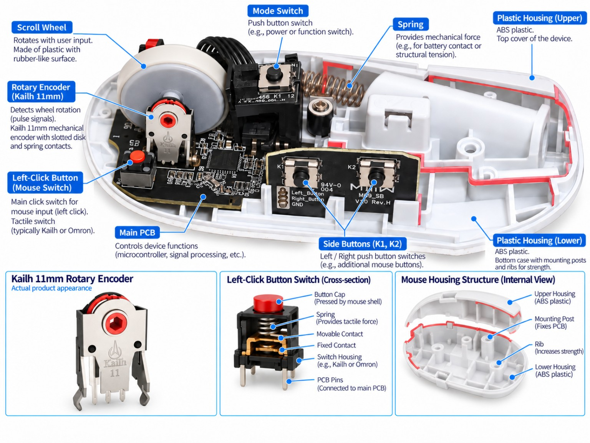

Overview
마우스 상판을 분리한 뒤 scroll wheel, rotary encoder, 좌·우 클릭 스위치, side switch, PCB 고정부와 housing rib를 중심으로 관찰했습니다. 단순 분해보다 기계 입력과 전기 입력의 경계를 이해하는 데 초점을 맞췄습니다.

마우스 내부 구조 인포그래픽 · 부품 설명용 이미지
Input Path
관찰한 부품을 입력 경로 관점에서 정리하면 다음처럼 볼 수 있습니다.
Key Components
SCROLL INPUT
Kailh 11 mm Rotary Encoder
스크롤 휠 축과 결합되어 회전 방향과 단계 정보를 전기적 펄스로 변환하는 부품입니다. 여기서 11 mm는 마우스 설계에서 사용하는 encoder 높이 규격을 가리킵니다.
PRIMARY INPUT
Left-click Switch
상판 버튼의 변위를 내부 actuator가 받아 switch contact를 동작시키는 구조입니다. 버튼 감각은 switch 특성뿐 아니라 housing의 lever 형상과 조립 공차에도 영향을 받습니다.
MECHANICAL
Upper / Lower Housing
외관 역할 외에도 버튼 지지, PCB 고정, wheel 위치 결정, side-button 전달 구조를 동시에 담당합니다. 내부 rib와 boss 위치가 조립 강성과 부품 위치 정밀도에 직접 연결됩니다.
INTERFACE
PCB & Mounting
switch와 encoder가 PCB에 실장되고, housing의 screw boss 및 guide 구조를 통해 정해진 위치에 고정됩니다. 전기 부품과 기구물의 상대 위치가 입력 감각과 신뢰성에 중요합니다.
What I Looked At
부품 식별
스크롤 wheel 주변 encoder, click switch, side switch와 주요 고정부를 구분했습니다.
기구–전기 인터페이스
사용자 입력이 housing을 통해 switch/encoder에 전달되고 PCB 신호로 이어지는 흐름을 확인했습니다.
조립 구조
rib, screw boss, PCB support와 wheel 지지 구조가 부품 위치를 어떻게 유지하는지 살펴봤습니다.
문서화
분해 사진과 부품 정보를 기반으로 구조를 다시 도식화해, 관찰 내용을 빠르게 이해할 수 있도록 정리했습니다.